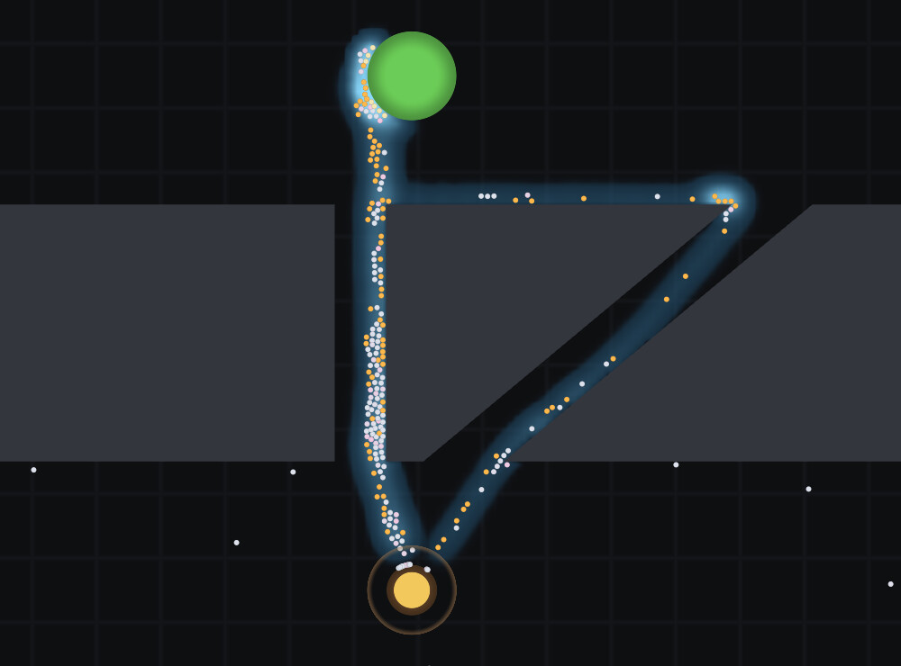
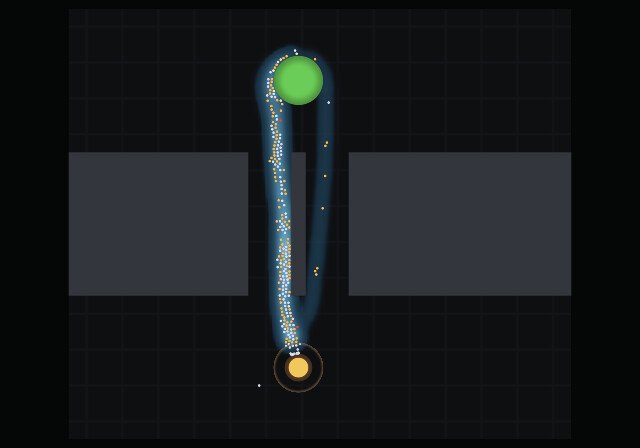
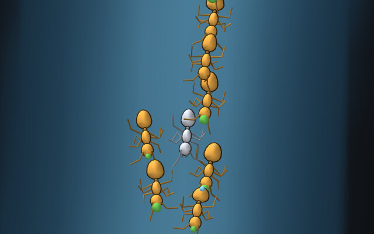
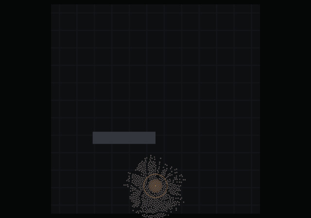
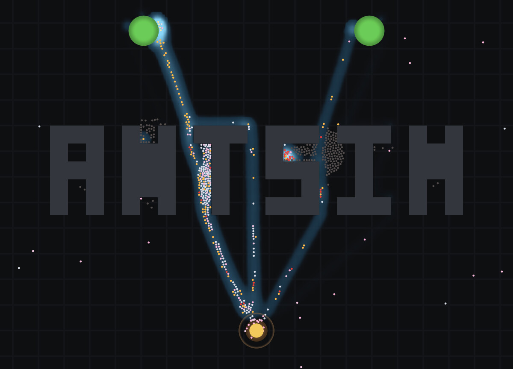

01What this is, and what it is not
A toy that tells the truth. The point is that you can watch it, enjoy it, and what you are enjoying is a real mechanism.
When a hundred ants converge on one of two identical paths for no reason at all, that is not a scripted effect. It is Deneubourg's symmetry breaking falling out of a nonlinear choice function — and the simulation reproduces the published experiment as a test.
Colonies grow from a starting population and can starve to nothing; ants that die stay where they fell; trails are only ever laid by ants that walked there. §3.9 is the section to read second — it is the explicit cut between the model described here and the much smaller thing M1 actually builds, because a design this deep ships nothing without one.
That cut has since been built and gone past. If you would rather see what the model does than what it was meant to do, §8 is the section to read first: the two published experiments with their numbers, and pictures generated from the runs those numbers come from.
It is not waldameisen
waldameisen is a 3D thermophysical model of a Formica polyctena mound: soil columns, microbial heat, a volume raymarcher, and no ants in the simulation at all until M3. antsim is the opposite half of the same world — the ants, outdoors, in 2D, individually visible, doing things you can watch on a timescale of seconds.
What antsim takes from waldameisen is the engineering, not the model.
| Component | Why it comes across intact |
|---|---|
| SBCL + ASDF, dependency-free numeric core | The core stays portable and fast; dependencies live in the render and scenario layers only. |
render/preload.lisp — the libGL trap fix | Verbatim. Without it every frame comes back black on this machine. See §5.4. |
| Headless EGL 4.5 context → FBO → PNG | Headless is the test path, not a fallback. |
| Dependency-free PNG writer | Verbatim, along with its CRC32 / Adler32 test vectors. |
Counter-based RNG keyed on (id, tick) | Determinism by construction. *random-state* stays banned. |
| Persistent worker pool, fixed partitions | Never make-thread per tick; fixed ranges keep threaded runs bit-exact. |
Struct-of-arrays, specialized simple-array | Zero allocation in the tick loop, asserted by a test. |
| Persistent-mapped SSBO for instances | The instancing path is already proven at 3 000 instances. |
Makefile with guix shell nvda@580 targets | GPU work needs the driver from a guix profile. |
| “Nothing is silently tuned” | Every unmeasured parameter is a defparameter whose docstring names what it was fitted against. |
What antsim does not take: the thermal core, the voxel grid, the raymarcher, the soil and weather model. Different problem.
02Design principles
- Every behaviour cites a mechanism. If a rule cannot be traced to a published observation or a named model, it is either a calibration parameter — documented as such — or it does not go in.
- Emergence is not scripted. Trail selection, shortest-path finding, division of labour and the death of a trail after food runs out are all consequences, never special-cased. Each has an acceptance test that reproduces the published experiment.
- Determinism is a feature. Same scenario, same seed ⇒ byte-identical run, single-threaded or threaded. This is what makes the acceptance tests meaningful and bug reports reproducible.
- Headless first. The sim must run and render without a window, so it can be tested in CI and so results can be inspected as images rather than described.
- Legibility is a design goal. An observer should be able to tell what an ant is doing by looking at it.
- Simple first, refined later — and the simplification must still be science. The model below is deep enough to never ship. So M1 takes the smallest set of mechanisms that can still produce the §3.8 phenomena, and every one of them is a sound abstraction of something measured rather than a placeholder to be thrown away. §3.9 draws that line explicitly. Nothing deferred is deleted; it is scheduled.
03The science model
3.1 Species, and the scale it sets
The choice of reference species is not cosmetic — it determines whether pheromone trails are even the dominant navigation mode.
Calibrate on Lasius niger, the black garden ant, with species as a swappable parameter set.
L. niger is a mass recruiter with the best quantitative literature on trail laying and following anywhere in myrmecology. Formica polyctena — the waldameisen species — is the sentimental choice, but wood ants are comparatively poor trail followers: they navigate primarily by visual landmark memory and individual route fidelity, and their “trunk trails” are largely cleared physical paths rather than chemical gradients. Building the pheromone core around Formica would mean building it around the species that uses it least.
Built at M6. A species set is the list of values where
an animal differs from the parameter file, so
lasius-niger is the empty set — this file is the
Lasius set, and naming it in a scenario says which animal the
file is about and provably changes nothing.
+species-formica+ turns the trail down three ways
(deposition, following fidelity, τ), turns the route up, and is bigger and
faster; scenarios/formica.json is foraging.json
with that one key added, so the two are comparable by construction. Read
§7 before drawing a conclusion from the pair — the first one drawn from it
was wrong.
| Quantity | Value | Note |
|---|---|---|
| Worker body length | ~4 mm | L. niger minor worker |
| Walking speed | ~1–3 cm/s | A range, and individuals sit in it — see below |
| Arena | 1–2 m square | ≈ 250–500 body lengths |
| Pheromone cell | 5 mm | ≈ one body length |
| Grid | 400 × 400 | 160 k cells per field — trivial |
| Motion tick | 50 ms (20 Hz) | Ant moves ≤ 1.5 mm/tick — sub-cell |
Sub-cell movement per tick matters: it means an ant cannot tunnel through a one-cell obstacle wall, and pheromone deposition never skips cells.
Walking speed is a range, and individuals sit in it. The row above
quotes 1–3 cm/s, and the first version of the model took the midpoint and
gave it to every worker identically — which is not what the row says, and
is the one claim in the movement model that nothing in the literature
supports. Each ant now carries a lifelong multiplier, uniform in
1 ± *speed-spread* (0.10), drawn from its id and the world
seed on its own stream: the same construction as handedness in §3.4, and
for the same reason — a trait must not be re-rolled every tick, and must
not be correlated with anything the ant decides.
A tenth rather than the quoted range, because a factor of three between individuals would be two castes rather than variation. Measured over sixteen seeds on both bridges it moves neither §3.8 row. What it buys beyond honesty is overtaking: a single-speed column can only queue, and a fast ant stuck behind a slow one is the condition every result about lane formation is about — so this is also what gives §3.11's traffic rules something to sort. One asymmetry it introduces, recorded rather than hidden: energy drains per tick and not per metre (§3.5), so a brisk ant gets slightly more range for the same fuel.
3.2 Individual movement — the correlated random walk
An ant with no information does not walk randomly in the naive sense. It performs a correlated random walk: each step's heading is the previous heading plus a turn drawn from a peaked, zero-centred distribution, so the path is locally straight and globally diffusive.
- Turn angles from a wrapped Cauchy distribution. Real ant search paths sit well toward the ballistic end, which is why searching ants cover ground rather than spinning in place.
- Thigmotaxis — ants preferentially follow edges and walls. Real, and it makes obstacles interesting rather than merely blocking: a wall becomes a route.
- U-turns. An ant that loses a trail performs a characteristic U-turn and casts about, rather than continuing — a large part of why trails are stable.
- Search spirals. An ant homing on a path-integration vector that does not find the nest switches to an expanding spiral.
3.3 Pheromones — the field, and the nonlinearity that matters
Pheromones are scalar fields on a grid, one per chemical, each with its own decay constant and deposition rule.
Trails are never authored. A scenario configures a field's τ, diffusion and ceiling — it never contains a trail. Every field starts at zero and every milligram of pheromone in a run was deposited by an ant that walked there. There is no path data in the scenario format and no way to add any; a trail that appears is a claim the model is making, and seeding one would make every result meaningless.
| Field | Sign | Role |
|---|---|---|
| Trail (recruitment) | attractant | Deposited mainly on the return trip by a laden ant. The core positive feedback. |
| Nest / home-range | attractant | A colony-specific area mark — a “near home” signal that is not the trail. |
| No-entry | repellent | Marks branches that led nowhere. Documented in pharaoh ants, and genuinely different from merely letting the attractant decay — the colony visibly prunes dead ends. |
| Alarm | transient | Fast-diffusing, fast-decaying; released on disturbance, triggering aggregation then dispersal. The interaction hook: poke the nest, watch it erupt. |
Dynamics, per field, on the 1 Hz pheromone clock
C ← C · exp(−Δt/τ) ; evaporation — the essential negative feedback
C ← C + D·∇²C ; optional diffusion (alarm needs it, trail barely)
C ← C + deposits ; folded in from the per-ant deposit buffer
C ← min(C, C_max) ; saturation — a real trail is not unboundedEvaporation is not a detail. It is the mechanism that lets a colony forget. Without it, a trail to an exhausted food source persists forever and the colony never re-explores.
The choice function is the heart of the model
When an ant samples concentrations ahead — left, centre, right, via its antennae — it does not pick the maximum. It picks probabilistically, with a nonlinear response, in the form Deneubourg established for the Argentine ant:
P(i) = (k + C_i)^n / Σ_j (k + C_j)^n n ≈ 2, k ≈ 20n = 1 the colony
splits in proportion to what it finds and never commits — a good control
test to keep. With n = 2 a small concentration difference
produces a large probability difference, and that amplification is what
turns a random fluctuation into a trail. k sets how much
pheromone must be present before the ants care at all; below it the
choice is near-uniform and the ants explore.
Deposition is modulated, not constant
Beckers, Deneubourg & Goss showed that L. niger lays trail as a function of food quality: richer sucrose means more frequent and larger deposits, and below a threshold concentration the ants stop laying trail altogether while still feeding. That threshold is a beautiful emergent switch — poor food gets eaten but never recruited to — and it is the reason food sources here carry a quality as well as an amount.
3.4 Navigation — three systems, not one
- Path integration — the home vector. The ant continuously integrates its own displacement into a running vector pointing back at the nest. It means a forager that finds food in virgin territory with no trail can still get home — and then lay the first trail on the way. Without it, the first trail can never exist and the whole recruitment cascade has no seed. PI accumulates error, so long trips come home imprecisely.
- Trail following. §3.3, used when concentration exceeds the detection threshold.
- Landmark / route memory. The Formica mode. A stub in the first version, expanded later.
Weighting these is where personality comes from. An ant with a strong home vector and a weak trail ignores the trail — which is what prevents a colony from being trivially hijacked by a single strong trail.
3.5 Internal state and the foraging cycle
| Field | Type | Meaning |
|---|---|---|
| x, y | f32 | Position, metres |
| heading | f32 | Radians |
| speed | f32 | m/s, modulated by state and energy |
| state | u8 | Behavioural mode, below |
| crop | f32 | Food carried in the social stomach, 0…1 |
| energy | f32 | Personal reserve, 0…1 — the return-urge driver |
| age | u32 | Ticks alive; drives mortality, later polyethism |
| hv_x, hv_y | f32 | Home vector (path integration) |
| thr_* | f32 | Response thresholds, §3.6 — post-M1 |
| colony | u8 | Colony membership — indexes its trail field (§3.12) |
| body | u32 | Index into the body table (§3.11) |
| gait | f32 | Stride phase, for rendering (§5.2) |
| id | u32 | RNG key, stable for life |
TRAIL-FOLLOWING state, and
that simplification makes the model more correct rather than
less. An outbound ant always runs the same rule: sample three headings,
weight by the choice function, pick. Where there is no pheromone every
weight is kn and the rule degenerates
exactly into the correlated random walk of §3.2. Exploring and
trail-following are not two behaviours an ant switches between — they are
the same behaviour in two environments, which is what the Deneubourg
formulation actually says. One state, one rule, no switching logic to get
wrong.
Transitions are driven by continuous quantities, not timers. As energy falls the return urge rises — a weight on the home-vector direction that grows as the reserve drops, so a tired ant curves homeward rather than flipping a switch.
Crop and energy are deliberately separate fields. Crop is social food carried for the colony; energy is the ant's own reserve. An ant can starve while carrying a full crop, which is real, and is the whole reason the two are not one number.
3.6 Task allocation, age, and the lazy half of the colony
Response thresholds. Each ant has a threshold θ per task
and engages when the stimulus S exceeds it, with probability
S²/(S² + θ²). Thresholds adapt: performing a task lowers its
threshold, not performing it raises it. From identical ants with slightly
different thresholds, specialization emerges, and the
colony reallocates automatically when you remove half the foragers. No
central control anywhere.
Age polyethism. Young workers work inside; older workers forage. Foraging is the most dangerous task and is performed by the ants with the least remaining life — the colony spends its most expendable members.
Inactivity is real. A large fraction of workers are doing nothing at any moment, and “inactive” behaves like a genuine specialization rather than sampling error. A nest with visibly idle ants is more correct, not less.
3.7 Food sources and obstacles
Food carries two independent quantities, plus one option:
- amount — depletes on consumption. At zero the source is gone and the trail to it dies by evaporation alone, with no special case anywhere.
- quality — sets crop fill rate and trail deposition rate, so a rich source out-recruits a poor one even at equal distance.
- renewal rate — aphid honeydew regenerates, a seed pile does not.
Obstacles are polygons. They are static, authored, and often want to be straight, long or awkwardly shaped — a wall, a leaf, the rim of a dish — and a polygon says all of that exactly, where a chain of discs only approximates it and costs more to test. Three representations: the polygon for rendering, its edge list for collision, and a rasterized blocked-cell mask for pheromone blocking and broad-phase rejection.
Food is worth one note: a food source is a blocking body, not a marker you walk through. Ants must physically reach its edge, so they crowd and queue at a rich source. Crowding is a real constraint on foraging rate, and getting it free from the collision rule is better than modelling it.
3.8 What must emerge — the acceptance list
These are not features. They are consequences, and each one is a test. This table is the project's definition of “working”.
| Phenomenon | Source experiment | What the test asserts |
|---|---|---|
| Symmetry breaking | Deneubourg binary bridge, two equal paths | ≥80% of traffic on one arm within N minutes; which arm varies with seed |
| Shortest path selection | Goss double bridge, unequal arms | The short arm wins, reliably, across seeds |
| No selection without nonlinearity | Set n = 1 | Traffic stays ~50/50 — proves the choice function is doing the work |
| Quality-driven selection | Beckers, two sources differing in quality | The richer source wins even at equal distance |
| No trail below threshold | Beckers, dilute sucrose | Poor food is exploited but not recruited to; no trail forms |
| Trail death | Deplete the source | Trail decays to background on the evaporation timescale; colony re-explores |
| Task reallocation | Remove 50% of foragers | Forager count recovers from the nurse pool with no global controller |
| Homing without trail | Single ant, virgin arena | Path integration returns it to the nest within its error radius |
| Colony extinction | Nest placed out of foraging range | Stock falls, births stop, population decays to zero — starvation is a legitimate outcome, not a bug (§3.10) |
| Bodies never interpenetrate | Dense crowd at one small source | No two blocking bodies overlap after the relaxation pass, at any density (§3.11) |
| Competition post-M1 | Two colonies, one contested source | The nearer colony wins; raising ε visibly degrades both colonies' trail fidelity (§3.12) |
3.9 The M1 cut — what actually gets built first
Sections 3.1–3.8 describe the model. They do not describe M1.
Left unchecked the science above is a multi-year project, so M1 takes the smallest subset that can still produce §3.8, and each item in that subset is a defensible abstraction rather than a stub. The test of a good cut is that nothing removed is load-bearing for an acceptance row. Everything below passes that test.
| Mechanism | M1 | The simplification, and why it is still science |
|---|---|---|
| Correlated random walk | in | Gaussian turn instead of wrapped Cauchy. Same locally-straight, globally-diffusive path; the tail shape is a refinement, not a mechanism. |
| Trail pheromone field | in | One field. Decay, deposit, ceiling. No diffusion — real trail pheromone barely diffuses on the timescale that matters. |
| Deneubourg choice function | in | Unchanged. The one thing that must be exactly right, because §3.8 is a test of it. |
| Path integration | in | Home vector with proportional noise. The mechanism that seeds the first trail; without it nothing else happens. |
| Foraging state machine | in | Four states. No TRAIL-FOLLOWING, no SEARCHING. |
| Energy + crop | in | Two scalars, linear drain and fill. Return urge as a weight on the home vector. |
| Food amount + quality | in | Both load-bearing for two acceptance rows. |
| Obstacles | in | Polygons, with a rasterized mask for broad-phase and pheromone blocking. |
| Disc bodies + non-overlap | in | §3.11. One rule, Jacobi resolution. Cheaper than the alternatives and the thing that makes crowding emerge. |
| Colony growth and death | in | §3.10 — a birth rate, not a brood model. Extinction falls out of the same line. |
| Corpses as bodies | in | Dying leaves a blocking disc. Passive — costs one body kind, and makes the missing behaviour visible. |
| Per-colony fields + ε | in | §3.12. M1 runs one colony, so ε never fires — but the indirection is free now and unaddable later. |
| No-entry, alarm, nest-marking | later | Three of the four fields. None is needed for §3.8; each is a self-contained addition to an existing abstraction. |
| Response thresholds, polyethism | later | M1 has one task. Age still accumulates and still kills — it just does not yet steer behaviour. |
| Trophallaxis between ants | later | M1 unloads the crop straight into nest stock. The only mechanism needing pairwise coupling, and skipping it keeps the M1 tick embarrassingly parallel. |
| Landmark / route memory | later | The Formica mode; irrelevant to a mass recruiter. |
| U-turns, spirals, thigmotaxis | later | Real, measured, and all three make trails more stable — so M1 passing without them is the stronger result. |
| Necrophoresis | later | Corpses accumulate in M1 and nothing clears them. A behaviour, not a mechanism. |
| Multiple colonies | later | The data model supports them from day one; M1 runs one. |
The rule for adding anything back: it must be addable without changing the tick's shape. Every deferred item above is either a new field on an existing grid, a new scalar on an existing ant, or a new state on an existing machine. None requires rewriting M1.
3.10 Colony growth — a population, not a headcount
A run starts with a configured population and grows from there. The starting count is a free parameter — a couple of founders, or a mature colony of a few thousand, whichever the scenario wants. What changes is that it is a starting count rather than the count: births and deaths run from tick one, so the population is a state variable, not a setting.
- Capacity is a configured upper bound on the ant table — a memory budget, not a target. The table is allocated once at capacity and a liveness mask says which slots are alive, so growth is free: birth claims a slot from the free list, death returns it. This is exactly why the table was fixed-capacity to begin with.
- Birth rate is a function of nest food stock, scaled by a brood efficiency and clamped at capacity. A colony that forages well grows; one that cannot feed itself shrinks. That coupling is the point, and it is one line of arithmetic.
- Death comes from energy reaching zero and from age, with a per-tick hazard rising with age. Foragers die away from home; that is what foragers do.
- No brood stages in M1 — a single
stock → workersrate is the sound simple abstraction. Brood stages add a lag, and the lag is the only thing they add until nursing exists to interact with it.
A colony can also shrink to nothing. If stock runs out, births stop while deaths do not, and the nest depopulates and dies. This needs no special case — it is the growth rule with the sign reversed — but it does need stating, because it is the first genuinely unforgiving outcome in the model. A nest placed too far from food does not forage inefficiently; it starves.
The visible consequence is that “400 ants” becomes where a scenario starts, never where it stays. How many ants a run ends with is a result.
3.11 Bodies — a disc for every ant, and one non-overlap rule
An ant is a disc. Not for rendering — §5.2 draws the full articulated vector model — but for physics. A real ant is a head, a mesosoma, a gaster and six splayed legs, and colliding that shape against a few thousand copies of itself every tick is a problem with no payoff: at the scale anything is decided, an ant is a blob that takes up room. One position, one radius, done. The visual model and the collision model are deliberately different, and only the cheap one runs in the tick loop.
That single constraint is doing a surprising amount of work. It gives ants collision with each other, collision with terrain, crowding and queueing at food, physical congestion on a busy trail, and corpses that genuinely get in the way — all from one mechanism with one code path, rather than four subsystems that interact badly at the seams.
A box would work too, and is the obvious alternative — but a disc earns its place for one technical reason and one aesthetic one. Technically, an ant is always turning, and a disc is the only shape whose collision test does not care: an axis-aligned box has to be re-fitted every time the heading changes (and is badly wrong at 45°), and an oriented box needs a separating-axis test and a contact normal that flips between edges and corners. A disc's overlap is a subtraction and its normal is the centre difference, at any heading, for free. Aesthetically, discs simply look better in motion: contacts resolve along the line of centres, so crowded ants jostle and slide past each other smoothly, where boxes catch on their corners and produce a visible grid-lock jitter that reads as broken.
| Body | Shape | Moves | Blocks | Note |
|---|---|---|---|---|
| ant | disc | yes | yes | radius ≈ half a body length |
| corpse | disc | pushable | yes | inert; clutters, and can occlude a trail |
| food source | disc | no | yes | ants reach its edge and queue — crowding for free |
| obstacle | polygon | no | yes | static, exact, authored |
| nest entrance | disc | no | no | a trigger, not a wall — ants must get in |
The nest entrance is the deliberate exception. Making it blocking would seal the colony in; making it a narrow gap between two blocking discs is a tempting refinement — real nest entrances create measurable traffic jams — but that is a later scenario, not an M1 mechanism.
Corpses stay
An ant that dies becomes a corpse body where it fell, and it stays there. Nothing removes it, because removal is a behaviour the colony does not have yet — real ants perform necrophoresis, carrying corpses to refuse middens, and it is one of the best-documented stereotyped behaviours there is (Wilson's oleic-acid experiment: daub a live ant with the corpse cue and its nestmates carry it out anyway, while it struggles). Until that exists, corpses accumulate, clutter the approaches to a busy nest, and physically deform trail routes. That is not a bug to hide — it is an honest statement of what the colony cannot yet do, and it makes adding necrophoresis a change with a visible payoff rather than invisible bookkeeping.
A contact is a channel — much later
The relaxation pass already knows, every tick, exactly which ants are touching which. That list is the natural substrate for everything ants do to each other by touch: trophallaxis, antennation, tactile recruitment signals, nestmate recognition, alarm transmitted by contact rather than by air. All of it is real, all of it is contact-mediated in the literature, and none of it needs new spatial machinery — it needs a rule applied to a list the physics is computing anyway.
This is a long way out — after M7, and is noted only because it argues for keeping the contact list rather than discarding it once positions are corrected. Cheap to retain, expensive to reconstruct.
3.12 More than one colony — competition and trail corruption
The ant record already carries a colony id, so multiple colonies cost the model almost nothing structurally — but one decision has to be made now, because it is not retrofittable.
Trail fields are per colony, not global. Each colony deposits into its own field. An ant weights its own colony's field fully and every foreign field by an eavesdropping coefficient ε ∈ [0,1]:
C_effective(cell) = C_own(cell) + ε · Σ C_foreign(cell)| ε | Behaviour |
|---|---|
| 0 | Colonies are blind to each other and merely compete for food. |
| 0.1 | The setting. Intercolony trail eavesdropping is documented; ants do read foreign trails, imperfectly. The useful range is roughly 0.05–0.2. |
| 1 | One shared field — the colonies' trails genuinely corrupt one another: a strong foreign trail pulls your foragers toward a source someone else is already draining. Deliberately pathological, and useful precisely because it should visibly break what works at 0.1. |
Settled: ε is small. The biology is the weaker argument on its own — eavesdropping is real, but a foreign trail is a cue an ant can exploit, not a signal addressed to it, and colony-specific blends make it both chemically distinguishable and behaviourally discounted. “Some attention, much less than to your own” is ε ≈ 0.1, not ε ≈ 0.5.
The decisive reason is what ε does to the choice function. The
(k + C)n nonlinearity amplifies concentration
differences, and that amplification is the mechanism behind symmetry
breaking. Feeding a foreign field in at anything but a small weight lets a
neighbour's trail dominate the weights outright, and the two colonies collapse
into one system sharing a de facto global field. What is wanted is
perturbation: enough foreign signal to occasionally divert a forager
or tip a marginal branch decision, not enough to steer the colony. Small ε
makes competition a source of noise and drift rather than a takeover, and
keeps each colony's own symmetry breaking legible.
A single coefficient spans the whole range from independence to mutual interference, which is the cheapest possible way to make competition interesting. Memory is one field per colony — 640 kB at 400², so a handful of colonies is nothing.
Competition then has three channels, none special-cased: the food itself depletes and is shared; the trail fields interfere through ε; and the bodies physically block each other at a contested source (§3.11). Fighting is not in the model and will not be until there is a reason for it beyond spectacle.
M1 runs one colony. All of the above is a constraint on the data model, not M1 scope — the point of settling it now is that per-colony fields and a colony id cost nothing on day one and cannot be added later without touching every line that reads a pheromone.
04Architecture
Why Common Lisp, and why SBCL
Not nostalgia, and not because the author likes parentheses. Four properties of this language and this implementation are load-bearing for simulation specifically, and each one is visible in the code rather than asserted here.
Ad-hoc experiments that are still perfectly controlled. All 65
parameters of the model are defparameters in
src/params.lisp
— special, and catalogued in
config.md.
So an A/B is not a configuration system, a builder object or a
threaded-through options struct. It is a let:
;; the gallery pins the published experiments to the acceptance protocol (let ((*brood-investment* 0.0f0) (*max-age-ticks* 2000000000) (*resting-ants-block* nil)) (bridge-run! b (* 1200 (floor minutes 2))) (bridge-reset-counts! b) (bridge-run! b (* 1200 (ceiling minutes 2))))
Every frame the body calls into sees it without being handed a thing. Nothing global is mutated, the rebinding is per thread, and it is gone when the form ends. So the arrangement is ad hoc — declared at the call site, for exactly this run, with nothing to register — and at the same time perfectly controlled: side-effect free, thread-safe, and incapable of leaking into the next run. Two experiments can run concurrently in two threads without touching each other.
Most languages make you choose one or the other. You cannot do this in
Python: there the same manoeuvre is either mutating a module global and
restoring it in a finally — shared by every thread, so
concurrent runs corrupt each other — or plumbing the parameter through
every call site by hand. contextvars buys back the
isolation, but only for variables declared as such up front, with
set and reset tokens to carry around.
And it composes with the live image, which is where it stops being a
tidiness argument. At a SLIME REPL you can take a colony that is
already running — grown, with its trail laid, at whatever tick
it has reached — and put it into different physics for the next call,
by wrapping that call in a different let:
(defparameter *w* (gallery-world)) (world-run! *w* 24000) ; grow one, 20 min (let ((*resting-ants-block* t)) (world-run! *w* 1200)) ; same colony, (let ((*trail-decay-scale* 3.0f0)) (world-run! *w* 1200)) ; different world
The colony is the same object at the same tick; only the conditions around the next call changed, and they change back. The experimental condition is a property of the call rather than of the world or of how it was constructed — so a question you think of twenty simulated minutes in does not cost you the twenty minutes.
There is a receipt for all this. The same gallery run renders its
foraging pictures with *resting-ants-block* bound
on and the two bridge frames with it bound off, and
when the gallery was regenerated those bridge frames came back
byte-for-byte identical to the previous run. The isolation held, and
the file system proved it. The whole of
experiments.md
is measurements made this way.
The REPL is the instrument, not a convenience. A colony worth
looking at costs twenty simulated minutes to grow. In a compile-run-exit
language, every question you think of after it has grown costs you the
colony. Here make repl leaves the world in a variable:
inspect an individual ant, recompile the rule that decides whether it
turns, and call it again on the same world. Several of the
findings in the diary — the nest quietly filling with ants that were
not leaving, the departure bearing pointing backwards — were found by
poking a running world, not by reading a log.
Over SLIME and Swank this stops being a terminal prompt and becomes an environment. The editor talks to the running image: compile a single function with a keystroke and it is live in the world already in memory, jump to the definition of anything, inspect a structure by clicking through it, and when something signals you get the condition with a live stack and a set of restarts to choose from rather than a process that has already exited and a stack trace of where it used to be. It is a genuinely playful way to work, and playfulness is not a frivolous property for a project whose whole method is watching a thing run and asking it questions.
It compiles to bare metal. SBCL emits native machine code ahead of time — no bytecode VM, no interpreter, no JIT waiting to notice that a loop is hot. There is no warm-up, so the first tick of a run costs what the millionth does, which is what makes a deterministic benchmark of a simulation meaningful at all.
With types declared, the numeric core is genuinely fast — competitive
with C on this kind of work and sometimes ahead of it, because the
compiler sees the whole program and inlines across file boundaries
that a C translation unit would hide. The model is
structure-of-arrays over unboxed vectors — f32v,
u32v, fixv, defined in
src/util.lisp
— and the inner loops in
bodies.lisp
and
geom.lisp
carry (optimize (speed 3) (safety 0)) with the array types
declared, so the collision pass over a few thousand discs is arithmetic
on float vectors rather than a walk over a graph of objects. Ask SBCL
for the disassembly of any of them and you get the instructions.
The part that matters for a project like this one is that you choose per function. The exploratory code and the tight loop live in the same file, in the same language, with no foreign-function boundary and no second build system between them. Nothing has to be rewritten in another language once it turns out to be hot.
Determinism is a design decision the language does not fight.
§4.4 covers the counter-based RNG:
*random-state* is banned from simulation code because a
stateful generator makes a threaded run irreproducible the instant two
threads draw from it. What matters here is that the replacement is
ordinary code in
src/rng.lisp
— a pure function of (id, tick, stream, seed) — and that
the test suite pins its exact output, so a well-meaning improvement to
the mixing cannot silently invalidate a stored run.
The honest counterweight: the GL binding is a foreign-function
layer, the ecosystem for it is thin, and §5.4 exists because getting
a headless context up on the right libGL took real work.
None of that is Lisp being unsuitable — it is a small ecosystem, and
the cost is paid once at the boundary. The numeric core, which is
where the science lives, has no foreign dependency at all and runs in
CI without a GPU.
4.1 Systems
Mirrors waldameisen's split, for the same reason: the numeric core stays dependency-free and therefore fast, portable and CI-friendly, while everything needing a foreign library lives behind its own system.
antsim.asd
antsim ; core sim. deps: none (sb-thread only)
antsim/scenario ; JSON loading. deps: com.inuoe.jzon
antsim/render ; GL 2D renderer. deps: cffi, cl-opengl
antsim/live ; window + camera + input. deps: cl-glfw3 [M2]
antsim/test ; FiveAM core suite
antsim/render-test ; FiveAM render suite (GL tests skip without a driver)
antsim-gl-preload.asd
antsim-gl-preload ; the libGL preload, via :defsystem-depends-onThe preload must be a separate primary system pulled in
with :defsystem-depends-on — that is the only ASDF hook that
runs before ordinary dependencies, and it has to run before
cl-opengl binds a libGL. Not stylistic. See §5.4.
src/package.lisp ; the ANTSIM package (nickname AS)
src/util.lisp ; specialized array types + constructors [from wa]
src/rng.lisp ; counter-based RNG keyed on (id, tick) [from wa]
src/pool.lisp ; persistent worker pool [from wa]
src/world/grid.lisp ; pheromone fields, decay, deposit buffers
src/world/geom.lisp ; polygons, rasterization, spatial hash
src/world/bodies.lisp ; the disc table, broad phase, Jacobi relaxation
src/world/scene.lisp ; nests, food sources, obstacles
src/ant/state.lisp ; the SoA ant table, birth/death, free list
src/ant/sense.lisp ; antennal sampling, the choice function
src/ant/navigate.lisp ; path integration, trail following
src/ant/behave.lisp ; the state machine, energy, crop
src/ant/colony.lisp ; stock, birth rate, mortality, extinction
src/ant/step.lisp ; the per-tick integrator — the hot loop
src/sim.lisp ; multi-rate clocks, the top-level tick
src/scenario/json.lisp ; scenario load / validate
src/render/preload.lisp ; driver libGL, before cl-opengl [from wa]
src/render/png.lisp ; dependency-free PNG writer [from wa]
src/render/egl.lisp ; headless GL 4.5 core context [from wa]
src/render/shaders.lisp ; GLSL: field, geometry, instanced ants
src/render/antmesh.lisp ; the 2D ant vector model + gait rig
src/render/view.lisp ; ortho camera, layers, the frame
src/render/capture.lisp ; headless frame → PNG, contact sheets
src/live/window.lisp ; GLFW window, zoom/pan, pause, inspect
tests/ ; FiveAM suites, incl. the §3.8 acceptance tests
scenarios/*.json ; the scenes, including the bridge experiments4.2 Data model
Struct-of-arrays throughout, allocated once. Ants are a
fixed-capacity table with a free list; birth and death flip a liveness
bitmask rather than resizing anything (§3.10 — this is precisely why the
table is fixed-capacity). Pheromones are (simple-array single-float
(*)) per field per colony, indexed y*w + x. No
consing in the tick loop, ever.
Bodies are a second SoA table — x,
y, r, kind, flags — that
ants index into rather than duplicate, so collision sweeps one contiguous
array covering ants, corpses and food alike. A corpse is a body whose ant
slot has been freed.
Every write to shared state goes through a buffer. There are two, and they exist for the same reason:
| Buffer | Written by | Folded in on |
|---|---|---|
| pheromone deposit, per field | any ant laying trail | the pheromone clock |
| position correction, per body | any overlapping pair | the end of each relaxation iteration |
Both make the ant loop order-independent — two ants depositing in the same cell, or two pairs correcting the same body, commute — and order-independence is exactly what makes threaded runs bit-exact (§4.4). Applying either in place would be faster and would silently destroy determinism.
A spatial hash over a coarse grid (say 5 cm cells) serves both proximity queries and collision broad-phase, rebuilt each tick by counting sort into preallocated arrays.
4.3 Multi-rate clocks
| Clock | Rate | Drives |
|---|---|---|
| Motion | 20 Hz | Movement, sensing, collision, deposits |
| Pheromone | 1 Hz | Evaporation, diffusion, deposit fold-in |
| Colony | 1 / min | Births, deaths, stock, food renewal |
| Render | 30–60 Hz | Decoupled from sim; interpolates ant positions |
Plus a time compression factor, because a foraging trip is minutes but colony dynamics are days. The sim must run at 1×, at 100×, and headless as fast as it can.
4.4 Determinism
rnd01(id, tick)— a pure function of the ant's stable id and the tick number. No shared RNG state, no order dependence, thread-safe by construction.*random-state*is banned from simulation code. A test greps for it.- Fixed contiguous range partitioning in the pool, so the thread count never changes the result.
- A test steps two identical sims and requires byte-identical state.
4.5 Threading
The ant step partitions cleanly because both shared-state writes go to buffers and reads of the pheromone field come from the previous pheromone tick. With trophallaxis deferred past M1 (§3.9), there is no pairwise ant coupling left in the tick at all — which is a large part of why the cut was drawn there.
05Rendering
5.1 The pipeline
Top-down orthographic. Layers, back to front:
- Ground — subtle texture, so motion has a reference frame.
- Pheromone fields — the sim grid uploaded as a texture and colour-mapped in the fragment shader. This is the most beautiful thing on screen and should be treated as such — a living gradient that thickens into a road and then evaporates.
- Obstacles — filled polygons with a soft outline.
- Food sources — radius scales with remaining amount, so depletion is visible without a number.
- Nests — entrance, plus a home-range halo.
- Corpses — below the living, so a busy nest reads correctly.
- Ants — instanced, §5.2.
- Overlay — home vectors, choice probabilities, a selected ant's state readout, counters. Toggleable, off by default.
5.2 The ant — a real 2D vector model, animated
This is the part with no precedent in waldameisen, whose ants are two triangles with an elliptical mask — deliberately, because at a 1.3 m mound scale an ant is two pixels. Here ants are the subject, so they get built properly.
Implementation — articulate in the vertex shader
Per-instance data is (x, y, heading, gait_phase, scale, state,
tint) in the persistent-mapped SSBO — the same buffer path already
proven in waldameisen. The mesh carries per-vertex attributes for
which limb a vertex belongs to and its parameter along that limb;
the vertex shader derives the foot target from φ, solves the trivial
two-link 2D IK, and places the vertex. No per-ant CPU work, and no buffer
rewrite for animation.
Fallback if the VS math gets unwieldy: bake ~16 gait poses into a small UBO and lerp. Cheaper, easier to art-direct, loses the world-planted foot. Decide during the M3 spike.
As built (M3): the fallback was not needed. The two-link solve is
eight lines of GLSL, so the planted foot is kept. Two things the spike
settled that were not anticipated here. The skeleton — hips, link lengths,
bend directions, tripod assignment — is generated into the shader
from the file that builds the mesh rather than written out twice, because a
mesh and an articulation that disagree about where a hip is produce a leg
that detaches at some phases and not others, which looks like a rendering
glitch and is a data-duplication bug. And the instance record came out as
two vec4s, (x, y, heading, phase) and
(radius, state, load, flick) — flick being how
recently this ant put its gaster down, read off the
distance-since-last-packet the deposit rule already keeps rather than
recorded as an event, so the drawing cannot disagree with the mechanism
about when a deposit happened.
The level of detail came out as three tiers rather than two: the third is the M2 disc, kept rather than replaced, because below about four pixels of radius legs are noise and an analytically antialiased circle beats ninety triangles. That is also what guarantees every published figure is still drawn by the shader that drew it. The middle tier is a range of the full mesh's index buffer rather than a second mesh.
And the vector ant is what finally made the render target multisampled. Every earlier primitive antialiased itself, so nothing had ever asked the framebuffer for coverage; a leg is drawn a pixel and a quarter wide and a triangle mesh cannot do that trick. It fixed the obstacle edges as a side effect, which had had the same staircase for the same reason since M2 and had simply been lived with.
Legibility touches, all of them real behaviour
- Antennae sweep sinusoidally and bend toward the local pheromone gradient — you can watch an ant's antennae find a trail before its body turns.
- Carried payload drawn at the mandibles when the crop is loaded, sized by load.
- Gaster tip flicks down at the moment of a deposit — a visible event marking an invisible mechanism.
- State tint, subtle: outbound, at food, laden, tired.
- Speed modulated by energy, so a colony visibly slows when it is hungry.
5.3 Colour
Dark ground, warm high-value trail, ants dark and high-contrast against
both. The waldameisen lesson applies — a diverging map keyed on a
meaningful midpoint reads without a legend, where a sequential ramp needs
one. Here the meaningful midpoint is the detection threshold k:
below it the ants ignore the pheromone, above it they commit. That is where
the colour map should turn.
5.4 Headless, and the libGL trap
Headless is the test path. Every render is capturable to PNG without a window, which is what makes visual regressions testable and lets results be inspected as images rather than described.
cl-opengl asks the loader for libGL.so.1. On a machine with
both Mesa and NVIDIA it may get Mesa's — while the EGL context came up on
the NVIDIA vendor. Nothing errors. Entry points resolve,
buffer and framebuffer names are handed out, and every pixel comes back
black, because the dispatch layer has no current context.
(gl:get-string :version) returning NIL is the
tell. If frames come back black, check that first.
Hence preload.lisp, loaded via
:defsystem-depends-on so it runs before cl-opengl,
and hence the guix shell nvda@580 -- wrapper on every GPU
Makefile target. CI has no GPU, so GL tests must skip, not fail —
and a green CI run therefore does not mean the renderer was verified.
5.5 The live window, and why the camera comes early
Headless covers tests and image output but not “watch it run”, which is most
of the point of a playful sim. antsim/live therefore
lands with the renderer at M2, not at the end — because a free
camera is what keeps every question about scale open.
Without pan and zoom, arena size, ant count and render scale are all locked together, and every one of them has to be guessed correctly up front. With them, the same run is legible at any scale: zoom in and a single ant is a vector model with a gait; zoom out and the same colony is a trail network. Nothing about the world has to be decided in advance to see it.
| Input | Action |
|---|---|
| mouse wheel | zoom, anchored at the cursor — the world point under the pointer stays under it |
| right-drag | pan |
| space · + · − | pause, and time compression up/down |
| left-click an ant | inspect: state, energy, crop, age, home vector |
| home | frame the whole world |
Cursor-anchored zoom is worth calling out because the obvious implementation — scale about the screen centre — feels wrong immediately and is the same two lines of arithmetic to do properly.
Backend: cl-glfw3 — minimal, suited to one GL window, and
its input model is a direct fit for the above. Alternatives considered:
sdl2 (heavier, more capable, more moving parts) and a frame
sequence piped to ffmpeg (no new dependency, fine for sharing
results, useless for interaction).
The renderer stays surface-agnostic regardless: the camera is an ortho transform and a viewport, and the headless path is the same renderer with an FBO instead of a window. The live window is a second consumer of the frame, never a fork of it — which is what keeps the tested path and the watched path the same path.
5.6 The terminal view, and the rule it had to answer to
antsim --tui, or make tui: the same colony drawn in
characters, with a status line across the top and the arrow keys to pan. It
exists for the machine that cannot open a window — a server over SSH, a
container, a box with no graphics stack at all — which is a large fraction of
the machines this is likely to be run on, and none of the ones §5.5 was
written for.
The rule it had to answer to is the sentence directly above. A terminal view is a second renderer, so “never a fork of it” would forbid the whole feature. The resolution is that the rule is about the frame, and the terminal view consumes no frame — it is a second consumer of the world. It shares the thing that matters (one simulation, one tick, one set of tables) and shares none of the pipeline, there being no pipeline to share: no context, no shader, no vertex buffer, no pixel. The invariant that replaces it: the terminal view and the window view are two readings of one world, never two worlds.
No external dependency, and that is the decision rather than the
accident. Everything needed is already in SBCL:
sb-posix carries a complete termios, the size comes
from the TIOCGWINSZ ioctl, resizes arrive as
SIGWINCH, and vmin/vtime of zero make
a read non-blocking — so the loop needs no second thread and no
select. A curses binding would have meant
libncurses, which nothing bundles, to buy things a character
grid does not need. Every system call is confined to
src/tui/term.lisp, so preferring a portable library later is a
one-file change. It is POSIX only, and said so rather than papered over.
Since escape sequences can report the size, is the ioctl — and with it
sb-posix — needed at all? The size, yes; raw mode,
no. Canonical mode and echo are settings of the kernel’s tty
discipline, not of the terminal emulator, and no escape sequence turns them
off; the only sequence-free alternative is spawning stty, which
is a process and not a sequence. termios is not avoidable, and
the ioctl was never the reason for the dependency.
A cell is not square, and this is the one piece of arithmetic that cannot be got a little bit wrong. A terminal cell is about twice as tall as it is wide, so a row spans twice the world distance a column does; pretend otherwise and every circle renders as an ellipse and every distance read off vertically is wrong by a factor of two.
The bearing glyph is indexed in screen space, not world space — world y is up and terminal rows go down, so the table is indexed by the negated heading. Indexed raw, the picture is wrong in exactly half of itself: the ants above the nest point correctly and the ants below it point at their own reflection, which reads as two columns of traffic going the same way. A rosette of sixteen ants pointing outward is the cheapest way to see it, and a test draws one.
| Set | Glyphs | Distinct shapes for eight headings |
|---|---|---|
| Unicode (default) | → ↘ ↓ ↙ ← ↖ ↑ ↗ | eight |
ASCII (--ascii) | - \ | / | four |
A stroke has no arrowhead, so \ is both north-west and
south-east: what the ASCII set preserves is the axis of travel, not
the direction along it. That is a real loss, and why Unicode is the default —
but an axis is still most of what the eye reads when it looks at a trail, and
it is what a terminal that cannot do better can honestly show.
The terminal’s size is asked for, never assumed.
$COLUMNS is set by a shell for itself and not exported, so a
program that reads the environment gets nothing and falls back to whatever it
guessed — which is how a program comes to believe every terminal is eighty by
twenty-four. Three ways to ask, cheapest first: the TIOCGWINSZ
ioctl, then stty size down /dev/tty, then the
terminal itself in its own language — park the cursor at
ESC[999;999H, ask where it landed with ESC[6n, and
read ESC[rows;colsR back, since it cannot go past the last row
and column. SIGWINCH says when the answer changed. On a resize the camera keeps its centre and its scale and simply
shows more or less of the world; re-fitting would throw away the user’s zoom
every time a window manager twitched.
Only the cells that changed are written, each preceded by a cursor placement, with adjacent cells of one colour sharing a placement and a colour set. A full repaint of a 200×60 terminal is twelve thousand cells a frame and looks like it.
| Input | Action |
|---|---|
arrows, or hjkl | pan by one cell |
shift-arrows, HJKL | pan by half a screen |
z / Z | zoom in and out, about the centre — there being no cursor to anchor to |
space | pause |
. | advance a single tick. New: a terminal is the only place you can watch a tick at a time without a debugger |
+ / - | time compression, halving and doubling |
f | frame the whole arena |
t | show the next colony’s trail |
a | switch between ASCII and arrows |
c | colour on or off |
? | show or hide the key legend |
q / escape | quit |
Leaving the terminal wrecked is the one failure here that outlives the
process, so the restore is in an unwind-protect and happens on
the normal exit, on an error, and on the interrupt —
isig is cleared precisely so that ^C arrives as a
byte and takes that path rather than killing the process with the alternate
screen still up. Checked by driving the whole thing in a real pty, which is
also how it was found that the restore already worked on an unhandled error.
Everything except term.lisp is a pure function from a world to a
grid of characters, which is why its tests live in the everywhere-runnable
core suite rather than in a system of their own — no tty is needed to assert
on a frame.
06The scenario file
JSON, loaded by antsim/scenario — which owns the JSON
dependency — into plain structs, so the core never sees a parser.
{
"name": "goss-double-bridge",
"world": { "width": 1.2, "height": 0.8, "cell": 0.005 },
"clock": { "motion_hz": 20, "pheromone_hz": 1, "colony_per_min": 1 },
"species": "lasius-niger",
"pheromones": {
"trail": { "tau_s": 1800, "diffusion": 0.0, "max": 100.0 },
"no_entry": { "tau_s": 900, "diffusion": 0.0, "max": 50.0 },
"alarm": { "tau_s": 30, "diffusion": 0.02, "max": 20.0 }
},
"choice": { "n": 2.0, "k": 20.0, "eavesdrop": 0.1 },
"bodies": { "ant_radius": 0.0025, "relax_iterations": 3 },
"colonies": [
{ "id": "home",
"nest": { "x": 0.10, "y": 0.40, "r": 0.03 },
"capacity": 4000,
"start": 400,
"stock": 0.5,
"brood_per_stock": 0.8,
"max_age_s": 86400 }
],
"food": [
{ "x": 1.10, "y": 0.40, "r": 0.02,
"amount": 500.0, "quality": 1.0, "renew_per_min": 0.0 }
],
"obstacles": [
{ "polygon": [[0.4,0.30],[0.8,0.30],[0.8,0.34],[0.4,0.34]] },
{ "polygon": [[0.4,0.46],[0.8,0.46],[0.8,0.50],[0.4,0.50]] }
],
"seed": 12345,
"duration_s": 3600
}Note what is not in there, and cannot be: no ant
positions and no pheromone. start seeds a count at
the nest, not a layout, and there is no key anywhere that puts trail on the
grid (§3.3). capacity is a memory bound, start is
an initial condition, and the population between them is a result.
Colonies are a list from the outset even though M1 runs one, so competition
(§3.12) is a scenario change rather than a format change.
Anything a scenario omits falls back to the species parameter set; anything the species set omits falls back to a documented default. Validation is strict and errors name the offending path — a silently-defaulted typo in a scenario is a bug that costs an afternoon.
The bridge experiments ship as scenarios, which means the acceptance tests of §3.8 are literally the published experiments run as data files.
6.3 The ant block, and why arena size needs one
The override surface is uneven on purpose — it grew where an experiment needed it — but one gap turned out to be structural rather than incidental, and it is worth stating as a rule.
Arena size is the one thing a scene can change that the ant's
own calibration cannot absorb. A forager carries a fixed tank:
*energy-drain-walking* is a free parameter set so an ant
empties after about seven minutes of walking — roughly eight metres of
path — and that was chosen against the 1–2 m arena of §3.1. Put the food
three metres from the nest and no ant reaches it. Measured: the colony ate
8 units in half an hour and fell from 2000 workers to 26.
Nothing about that is a bug; it is what a fixed tank means. But it does mean
range belongs to the scene as much as to the animal, so a
scenario spanning metres has to be able to say so — which is what the
ant block is for.
Two things keep it from being a licence to tune. The default does not move, so nothing outside a file that sets it is affected. And the direction is the defensible one: a real Lasius forager ranges far beyond eight metres and trunk trails run to tens of them, so a metre-scale scene asking for more range is asking for the more realistic value, and the shipped default is the compromise a small arena allows.
Where a scenario does scale, a test asserts the ratio between its geometry and its range, because the failure it guards is silent: get it wrong and the file still runs, it simply stops being the same experiment at a different size.
07Milestones
- M0The stack stands up. done ASDF systems, package,
util/rng/poolcarried over, FiveAM wired, Makefile with the guix GPU targets. A headless context comes up and writes a non-black PNG. Proves the toolchain before any design is committed to it. - M1The core simulation, no renderer. both defining rows pass Exactly the §3.9 cut and nothing past it: the ant and body tables, CRW movement, disc collision with Jacobi relaxation, one trail field per colony, the choice function, path integration, the four-state machine, food depletion, colony growth and death. Ends when the §3.8 acceptance tests pass — verified numerically with no picture involved. This is the milestone that decides whether the science is right, and it deliberately does not depend on a single line of GL.
- M2The renderer, and the window. signed off Ortho camera, pheromone field texture, obstacle polygons, food, nests, ants as simple discs. Headless PNG gallery and
antsim/liveon GLFW with cursor-anchored wheel zoom, right-drag pan, pause and time compression. The window comes in here rather than at the end because it is what keeps arena size, ant count and render scale from having to be guessed up front. First time you can watch a trail form, at whatever scale you like. - M3The ant model, and how ants meet. done The vector ant, the tripod gait rig, VS articulation, LOD, antennae, payload, state tint. The one genuinely novel piece of engineering in the project. Note the collision model does not change: the disc stays, the drawing gets legs. All of that ships, articulated in the vertex shader with the world-planted foot rather than the baked-pose fallback. The second half — turning an overlap into an encounter — took the exchange with it: once the broad phase reports who met whom and at what bearing, recognition, giving way and trophallaxis are one function between them and none is more than a handful of lines. A contact carries evidence about when and never about where, because this genus tests negative for tactile transfer of direction, and a model that handed over a bearing would be inventing a channel the animal has been shown not to have. Lanes did not form, which §3.11 expected them to: 1.7 mm of lateral separation between the outbound and returning streams with the give-way rule, against 2.1 mm without, on a 55 cm trail with 600 ants. What giving way buys is throughput, which is the smaller claim and the one there is evidence for.
- M4The society, and three mechanisms that had nothing to do. done Multiple colonies, which needed no change to the tick at all — the per-colony indirection of §3.12 held, and the work was apparatus. Necrophoresis on Deneubourg's sorting model, which takes the corpses within 6 cm of a nest from 24 to 0. And route memory, which closes the oldest open flaw in the model: the home vector is a vector and not a path, so a laden ant used to drive at whatever stood between it and the nest and slide along it. An ant now keeps its own outward track and falls back to it when the bearing home is blocked — harvest 888 → 1264 on the word scenario, whose entire geometry is concavities, and no change at all on an arena with one small wall, which is the right shape of result for a fix aimed at concavities. It does not, however, close the pockets: ants still get caught in concavities and die there, nobody counted them with the mechanism on, and M7 begins by measuring it. Response thresholds, the no-entry field and search spirals ship too, and are inert at shipped parameters for three different measured reasons: this model's ants do not currently fail in the ways they recover from.
- M5Interaction, and an excitable medium that had to be talked down twice. done Click an ant to inspect it, drop food, place obstacles, poke the nest and watch the alarm field propagate. The window existed from M2; this is what you can do to a running world, and the interesting half is the alarm field, because it is the one mechanism in the model whose precondition is a person — nothing here attacks a nest, so a colony nobody pokes has no alarm array allocated at all. It took three attempts. The first had no per-ant state, which is a positive feedback with no brake: every ant of 400 alarmed within three minutes, none of them ever calm, and 244 starved because a permanently frantic ant neither forages nor goes home to be fed. The second added a fixed episode and a refractory period, stopped the dying, and still never ended — ~300 of 400 alarmed at seven minutes, in a self-sustaining oscillation, with a release-rate cliff that moved with colony size. A parameter balanced on a bifurcation is not calibrated, it is lucky. What was actually wrong is that release was a rate: an ant discharging every tick paints a twenty-second line of alarm across the arena as it flees, so the mechanism was carrying its own source around. One discharge at the moment of alarm, scaled by the dose that caused it, is sub-critical by construction — forty-fold in the parameter, six seconds in the outcome — and is also what a gland does.
- M6Polish — and a published claim withdrawn. done A scenario can name its animal:
"species": "formica"runs Formica polyctena over the same arena as Lasius. A species set is the list of values where an animal differs, never a second copy of the parameter file, solasius-nigeris the empty set and naming it provably changes nothing — which matters, because every measurement inexperiments.mdwas taken without naming a species. Time-lapse capture ships as a contact sheet: ninety-one frames of half an hour on one page, each captioned with its own simulated clock. Colour turned out to be built already and documented as unbuilt in two places, two milestones stale. And the renderer turned out to be dividing by a hardcoded960in two shaders where it meant the viewport width.The species pair was published with a claim attached — that running two animals over one arena is the cheapest available test of whether §3.3's nonlinearity does the work it is credited with. It is not that test. The prediction came out right for a different mechanism. Formica does fail to break symmetry on the binary bridge (0.52 against Lasius's 0.92, 0 of 9 replicates against 9 of 9), but apply all three trail knobs to a Lasius colony and it still commits at 0.85, 9 of 9. What breaks it is the body: a 4 mm ant walking at 4 cm/s congests a branch whose width was chosen for a 2 mm ant at 2, and size and pace alone reproduce the collapse with the trail untouched. Thin the colony until the traffic matches and commitment returns to 0.78 — still below Lasius, so there is a real trail effect, worth about a third of what the naive comparison shows. A species set is not an A/B. Eighteen parameters move at once, and changing the animal changed the experiment.
- M7Movement. specified, not started Ants get caught in concavities and die there, and they still do after M4's route memory. The first thing this milestone does is withdraw a claim: “route memory closes the pockets” is not supported by anything measured — the only stuck-against-terrain counts in the repository predate the mechanism by two days and were never repeated. What was measured is harvest up 42% and corpses down 15% on the word scenario, and that stands. So the milestone is instrumentation first: nothing in the model can currently see that an ant is stuck, which is why a mechanism aimed at it could ship without a number. Then the candidates, ranked — and a fix is only allowed in if it is shown to fail with the mechanism off, on a scenario whose whole geometry is the failure.
- →Beyond M7 — the contact layer. Ant-to-ant touch as a communication channel: trophallaxis between individuals, antennation, tactile recruitment, nestmate recognition, contact-borne alarm. The collision pass already produces the contact list this needs (§3.11), which is the only reason it is worth naming this far out — the groundwork is a decision made in M1, the work itself is not scheduled.
08What it actually does
Everything above this line is design. This section is the model
running — the same numbers the acceptance suite asserts on, and
pictures generated by make gallery rather than
screenshotted, so they cannot drift away from what the code does.
The two published experiments
Both are laboratory apparatus with printed outcomes, and both are in the suite as experiments rather than as unit tests — run on the model, scored by the papers' own criteria. Sixteen seeds each, fixed colony, six minutes to commit and six minutes measured.
- 9 / 7 Deneubourg's binary bridge (1990) — which arm the colony commits to, across sixteen seeds. Two arms of equal length, so any departure from an even split is the colony's own doing. Mean busiest arm 0.944. The result is that it makes a choice, not that it has a preference — a model that always picked arm A would look like a pass and be broken.
- 16 / 16 Goss's double bridge (1989) — replicates in which the short arm wins. One arm 1.73× longer. Mean share 0.814. Nothing in the model measures a distance: ants on the short arm simply close the round trip sooner, so they deposit sooner, and §3.3's nonlinearity amplifies the head start into a commitment.
- 43 128 Checks in the core suite, plus 95 in the renderer suite. Zero failures. Neither needs a GPU: the renderer suite runs on llvmpipe in software, which is what CI uses (§5.4).


SCENARIO=scenarios/deneubourg-binary-bridge.json make live
and successive runs pick different arms.
The density window, which was not designed
The double bridge only works over a range of colony sizes. Past about 900 ants the corridors congest, congestion starts deciding the route instead of pheromone, and the long arm wins outright — the shortest-path result does not weaken, it inverts. Below roughly 250 there is too little traffic for the nonlinearity to latch onto and individual runs wander.
This is a property of the apparatus rather than a knob, and it says something the papers do not: a bridge result quoted without its colony size is under-specified. Three explanations were tried and were wrong before this one; all four are recorded in experiments.md, wrong ones included, because a negative result has a shelf life and the reasoning is worth more than the verdict.
The ant, close enough

A colony that runs out

foraging scenario, after a finite
source has run dry. Two §3.8 rows in one frame — trail death and
colony extinction. The corpses came home to die and stay where they
fell; nothing removes them, because necrophoresis is a later
milestone. The full sequence, with the pheromone totals at each step,
is in
DIARY.md.
Scenarios that ship
| Scenario | What it is for |
|---|---|
foraging | A source that visibly empties, and a colony that starves when it does. |
deneubourg-binary-bridge | Equal arms. The winner changes between runs — that is the result. |
goss-double-bridge | Unequal arms. The short one wins every time. |
antsim | The project's name spelled in solid terrain, on a 1.00 × 0.72 m arena. |
antsim-large | The same word on a 5.00 × 3.60 m arena. |
antsim-overload | 1400 ants on 40 units of stock: metabolism exceeds income from the first tick. |

scenarios/antsim.json, generated from the same 3×5 font
the HUD draws with rather than transcribed from it. The nest is below
the word and the sources above, so every trail has to thread the
lettering. Nothing in the simulation can see the word.
Where to start if you want to run it. make test
needs no GPU and takes a couple of minutes. make acceptance
runs the two experiments above. make live opens the
window, which draws a fresh seed each session and prints it, so any
run worth keeping can be replayed with SEED=. The
README has
the rest.
09Risks
| Risk | Level | Mitigation |
|---|---|---|
Literature constants are in units the model does not use — k is in “passages”, not concentration | High | A calibration pass with documented fits, exactly as waldameisen §2.8. The bridge experiments are the calibration target |
| Scope — the science is deep enough to never ship | High | The §3.9 cut is the answer: M1 builds a named subset, §3.8 is the definition of done, and everything else is explicitly scheduled rather than argued about again |
| VS leg articulation fights back | Medium | LOD-simple ants work from M2; the pose-LUT fallback is a known-good plan B |
| Trail dynamics tuned into a regime that looks right but is not | Medium | The n = 1 control test — if it still selects a path, the selection is coming from something other than the choice function |
| Non-overlap relaxation does not converge in a dense crowd | Medium | Jacobi with fixed 2–3 iterations is a soft constraint — residual overlap is bounded, not zero. If a queue at a rich source jitters, raise iterations before changing the scheme; §3.8 measures it rather than assuming it |
| Multi-rate clocks introduce order dependence | Medium | Both shared-state writes are buffered and folded in; the determinism test catches regressions |
| Corpses accumulate until they choke a nest | Low | Intended, and visible. It was the argument for necrophoresis, which M4 built — corpses within 6 cm of a nest go from 24 to 0, so a scenario running for simulated weeks now has the midden behaviour its results depend on |
| Performance | Low | 5 k ants × 160 k cells at 20 Hz is small; waldameisen already instanced 3 k |
10Decisions
Settled
- Reference species — Lasius niger
Best trail literature, a true mass recruiter. Formica polyctena is a contrasting parameter set, built at M6.
- Complexity is capped at the §3.9 cut
M1 builds that subset and nothing past it. Everything deferred is scheduled, not deleted, and each deferred item is addable without changing the tick's shape.
- Trails are never authored
The scenario format has no way to place pheromone, by construction (§3.3).
- The live window lands at M2, with cursor-anchored wheel zoom and right-drag pan
So arena size, ant count and render scale stay open questions instead of up-front guesses (§5.5).
- Population is dynamic on top of a configured start
capacitybounds memory,startis an initial condition, and the running count is a result — including zero, when a colony starves (§3.10). - Ants are discs; obstacles are polygons
One non-overlap rule, Jacobi resolution so determinism survives (§3.11).
- Trail fields are per colony with an eavesdropping coefficient ε
M1 runs one colony; the indirection is free now and unaddable later. ε is small — default 0.1: a large ε would let a neighbour's trail dominate the
(k + C)nweights and collapse the colonies into one shared field (§3.12). - Repository
Initialised and pushed to
bonk/antsim, branchconcept.
Still open
- Colony scale
→ hundreds of ants in a 1–2 m arena for the M1 acceptance scenariosThose reproduce lab experiments at lab scale. With pan and zoom in from M2 this is much less of a commitment than it was, and
capacityand arena size are per-scenario anyway. - JSON dependency
→
com.inuoe.jzon, confined toantsim/scenarioAlternative: a hand-rolled reader, to keep the whole project dependency-free. - Default branch
→ undecided
conceptis currently the only branch on the remote; nothing has been set as default yet.
11Sources, and what still needs checking
The mechanisms are well established. Several specific constants below are from memory and must be verified against the papers before they are committed to code. This project inherits waldameisen's rule that nothing is silently tuned — and that rule is worth nothing if the “measured” values were guessed.
Load-bearing, confident
- Deneubourg, Aron, Goss & Pasteels (1990), The self-organizing exploratory pattern of the Argentine ant, J. Insect Behavior 3:159 — the binary bridge, and the nonlinear choice function.
- Goss, Aron, Deneubourg & Pasteels (1989), Self-organized shortcuts in the Argentine ant, Naturwissenschaften 76:579 — the double bridge and shortest-path selection.
- Beckers, Deneubourg & Goss (1992, 1993) on Lasius niger trail laying — deposition modulated by food quality, and the quality threshold below which no trail is laid.
- Robinson, Jackson, Holcombe & Ratnieks (2005), “No entry” signal in ant foraging, Nature 438:442 — the repellent pheromone.
- Wilson, Durlach & Roth (1958) — necrophoresis and the oleic-acid corpse cue.
- Bonabeau, Theraulaz & Deneubourg — the response-threshold model of division of labour.
- Hölldobler & Wilson (1990), The Ants — age polyethism, trophallaxis, recruitment taxonomy; the general reference.
- Müller & Wehner on Cataglyphis path integration, and the systematic search spiral of a homing ant that arrives at the wrong place.
- Charbonneau & Dornhaus — inactivity as a genuine specialization, not sampling noise.
Needs verification before it becomes a constant
n ≈ 2,k ≈ 20— recalled from Deneubourg 1990, in units of bridge passages. The exponent is the robust part;kneeds both the paper and a unit translation into the sim's concentration scale.- Trail pheromone lifetime τ — “tens of minutes” for L. niger is safe, the specific half-life is not, and it is one of the most consequential parameters in the model.
- Walking speeds, crop capacity, and the sucrose threshold for trail laying — all quoted approximately above, all needing a source.
- Worker lifespan and the age-mortality hazard, now that demography is in M1 (§3.10) rather than a later refinement.
- Whether Formica polyctena's weak trail-following is best
modelled as a low deposition rate, a low following fidelity, or a shorter
τ.
Probably all three — but that is a claim, not a citation.Measured at M6, and it is two questions with different answers. For the mass of pheromone on the ground it is genuinely all three, and near-perfectly multiplicatively: the product of the three separate reductions predicts the combined one to within 9% across a tenfold total. For the collective choice the trail is supposed to produce they are not interchangeable at all. Deposition is exactly inert —kis denominated in units of deposition, so halving both moves the detection threshold with the signal and the choice function cannot tell. τ is worth 0.02 of commitment. Following fidelity is the whole effect, and not via the exponent: cuttingnfrom 2.0 to 1.5 alone still commits 9 of 9 at 0.90, while the steering gains alone cost more. The nonlinearity decides correctly and the body fails to act on it. The citation is still owed for the animal.
A docs/calibration.md should hold these, each with the fit it
came from and the date, in the waldameisen style.